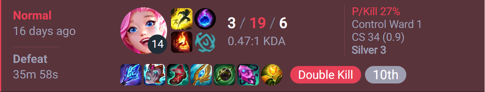
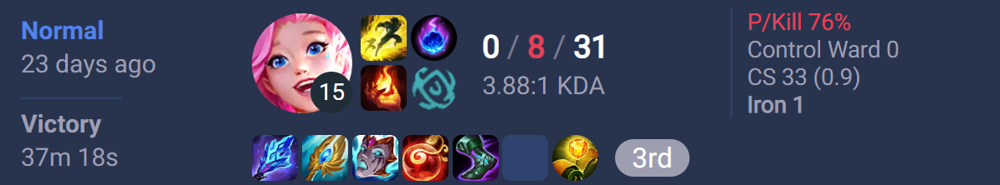
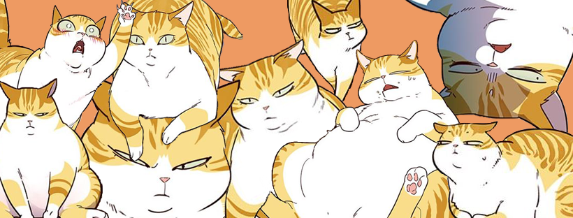
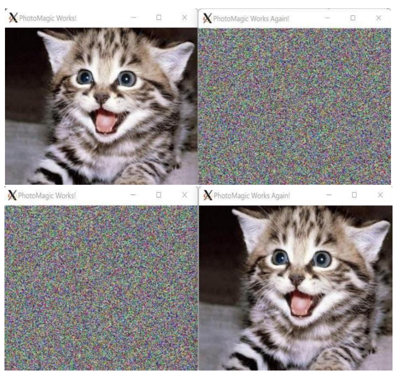
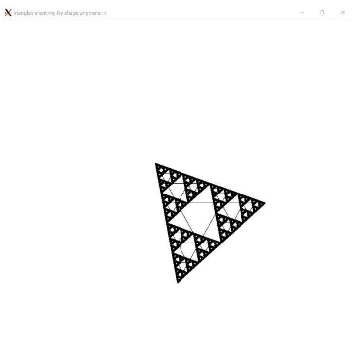

The purpose of this website is to give people a general rundown of who I am! :>
In my free time and in between studying for classes, I like to play videogames! Some of my favorites that have a special place in my heart include Hollow Knight, League of Legends, and Genshin Impact! Below is a picture of me playing Genshin Impact next to one of my favorite characters in game!

Despite my enjoyment of videogames, I'm actually not very good. It's a new hobby I got into recently, so while I'm not ranked very high in terms of my gameplay, I enjoy learning how to get better with every game! Below are a few pictures from my matches, sourced from the website op.gg as it records all of my matchups every season!
 This has been a lifelong hobby of mine! For those who don't know what it is, it's East Asian animation/comic books, mainly from Japan, South Korea, and China. It's It's been something that has helped me cheer up when things are down. There truly isn't anything better than a couple of warm blankets, curled up with a good manga! Below is a picture from one of my favorite manhwas, Eleceed! Can you tell he's one of my favorite characters?
This project I made in January 2022 is one of my favorites! The project had me working with RBG values within each pixel of an image and encrypt the image. It was a very interesting project that helped introduce me to C++ as well as the SFML library.
This is another one of my projects that I am very proud of! This project was similar to the Image Encoder project in that I was still very new to C++ and the SFML library, but this project was a full of a little more math! I had to figure out how to recreate a Serpinski Triangle using recursion, and it kind of had me going back to remember my trigonometry, which I had a lot of fun doing!
Over the summer of 2023, I was fortunate enough to be able to work on a research project that had focused on robotics, and incorporating that into pediatric rehab. It was a very fun and interesting project to be a part of, and so I hope that I can make some time in the future to work more on it, even if it is just as a hobby!
It was only after I got into Computer Science that I started learning more about machine learning! It's very fascinating stuff and while it is all very complicated stuff, I hope that some work I get to work on can work more into machine learning!
As I mentioned before, I really like East Asian comic books, so naturally, I've begun to read a new release called Kagura Bachi. It has already started becoming popular and gaining lots of traction, so I've naturally also become very interested in it as well!
Here's an interactive list of some of my top 5 most recent listens! Hope you decide to give them a listen!
| Song Title | Artist |
|---|---|
| HUNTING FOR YOUR DREAM | GALNERYUS |
| SPECIALZ | King Gnu |
| Freal Luv | Far East Movement & Marshmello (ft. Chanyeol & Tinashe) |
| short kings anthem | TMG (ft. blackbear) |
| Circus | Britney Spears |